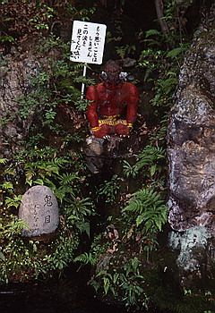
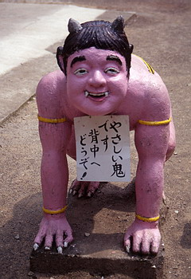

桃太郎神社/愛知県犬山市
桃から生まれた桃太郎の伝説はその生誕地をめぐって岡山と高松の中傷合戦というかたちで熱いバトルをくりひろげている。
その熱い戦いのカヤの外、誰にも相手にされずに「桃太郎生誕の地」を自己申告しているのが、中部地方屈指の観光都市、犬山の桃太郎神社なのだ。 この桃太郎神社にはたくさんのコンクリート人形がいて、 怪しい桃太郎ワールドが繰り広げられているのだ。
ここは桃太郎界では異端扱いだが、地元では結構人気の神社らしく神社前には食堂や土産物屋が並び、名物豆腐田楽やお約束のきびだんごなどを売っていて、子連れ客で賑わっている。
さて、境内に行ってみよう。まず最初に目につくのは鳥居の下にデーンと立つ桃太郎の像。
もちろん桃から生まれたの図。
横に目をやればお婆さんが岩の上に。
なんとお婆さんが洗濯しすぎて足跡がついてしまった 岩だという。桃太郎in犬山説証拠その1。
鳥居をくぐって階段を昇っていく。途中お爺さんやキジ、猿、犬などのサブキャラの充実具合を堪能しながら昇り切ると桃太郎と3匹の家来の図が。
左をみれば桃の形をしたのピンクの鳥居。
すごい、桃太郎一色。
鳥居を潜ったところの池のほとりには涙を流して（ホントに目から水が出ている）反省する鬼や宝の山を引っぱって凱旋帰国する一行の図などが。

拝殿にはいる。天井には子供達の描いた絵が隙間なく貼りつけてあり、壁には子供のお願いが書かれた団扇のようなものが貼ってある。
ここでは桃太郎にちなんで5月5日に子供の祭が行われる。子供達は勿論桃太郎の格好をして宝物をたくさん積んだ山車を引いたりする。もう桃太郎賛歌の雨嵐。

本殿の向かいには宝物館が。鬼ヶ島からぶんどってきたお宝でも展示してあるのかと思ったら、鬼の珍宝（チンポ）や鬼の金棒、鬼のミイラの写真などの鬼グッズの展示が中心で肝心の桃太郎ものはといえば昔の子供まんがや陶器など、鬼はともかく桃太郎、ホントにいたのかよおまえ、といった感じの展示でした。
最後に拝殿に戻ってお参りをしたのだが、そういえばここの神社って桃太郎を奉ってあるらしいけど、何のご利益があるのかよくわかんねーな、と思いつつ「岡山にも高松にも相手にされない犬山の桃太郎よ、これからも頑張ってくれ」と心のなかで念じてみました。
1997.5.
珍寺大道場 HOME